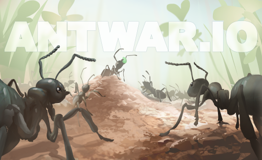

Introduction
AntWar.io is a highly strategic multiplayer browser game where you build, manage, and defend your ant colony while battling other players to control territory. What makes it truly unique is its deep simulation of colony mechanics, combining resource management, unit production, and tactical warfare in a dynamic overground and underground environment. Players love it for its intense early-game survival, the satisfaction of scaling up from a few nanitics to a massive army, and the complex interactions with weather, seasons, and AI-controlled predators like spiders and bugs. Every decision, from assigning worker roles to planning group raids, directly impacts your colony's survival. It offers a perfect blend of casual accessibility and hardcore strategic depth, making every match a thrilling battle for dominance in the micro-world.
Getting Started

To begin, always play the tutorial found under Singleplayer in the main menu to fully grasp the core mechanics. In AntWar.io, you start by carefully landing your Queen to establish your initial anthill. Your primary controls involve selecting individual ants or groups and issuing commands like foraging, digging, or attacking. Early on, focus heavily on gathering food to feed your colony and lay more eggs. You must balance producing nanitics and workers. Crucially, prioritize workers, as they are stronger and more resilient, and meat is generally more abundant and efficient than green food in the long run. Avoid relying heavily on the Forage command, as it is poorly implemented; instead, manually direct your ants to specific food sources. Manage your colony's hunger and navigate the day/night cycle, ensuring your ants return underground or find cover during dangerous nights. Claiming territory early by expanding your tunnels will give you a vital spatial advantage over AI and player opponents.
Basic Tips
First, prioritize meat over green food whenever possible, as it yields much better long-term results and supports significantly faster colony growth. Second, always produce worker ants over nanitics unless you are completely devoid of nearby meat sources, since workers are much more powerful and resilient for both gathering resources and early defense. Third, compartmentalize your roles early on; designate specific tunnels for food storage, brood care, and waste disposal to keep your anthill highly organized and efficient. Fourth, avoid the Forage command, which often leads to wasted time; manually select your ants and send them directly to known food drops or spider carcasses. Finally, focus on an optimal early-game defense strategy by digging chokepoints near your Queen's landing site. This forces AI predators and early enemy players into narrow tunnels where your limited number of nanitics can hold them off effectively, protecting your vulnerable brood from sudden raids.
Advanced Strategies
For mid-to-late game success, master the art of group raids and scouting. Use fast nanitics to scout enemy territories and identify weak points in their tunnel networks before launching a highly coordinated group raid. When attacking, overwhelm the enemy's defensive chokepoints by sending continuous waves of workers and soldiers simultaneously. Secondly, implement a strict compartmentalization of roles in your colony layout. Create dedicated, easily defensible chambers for your Queen and brood, surrounded by complex, maze-like tunnels that act as deadly kill zones against intruders. Thirdly, adapt your strategies based on the AI count and season. In the early game, focus on rapid expansion and securing local meat drops. By the mid-game, shift to aggressive territorial claiming and neutralizing rival players. Finally, utilize the environment to your advantage; use rain and weather changes to mask your troop movements or force enemies out of their overground foraging routes, making them highly vulnerable to ambushes.
Pro Tips
True experts in AntWar.io master the nuances of landing the Queen. Choose a landing spot with immediate access to high-value meat drops but natural terrain obstacles that limit enemy approach vectors. Secondly, understand the degradation mechanics and hibernation triggers; stockpile food well before winter or severe weather hits to prevent colony starvation when foraging becomes impossible. Thirdly, exploit the Entity AI behaviors. You can lure aggressive predators like spiders into enemy player territories, using them as biological weapons to distract or thin out rival forces. Lastly, manage your limited duties meticulously; never let your colony's population bottleneck due to inefficient egg selection or mismanaged hunger levels, as a starving colony cannot recover from a single successful enemy raid.
🎮 Controls & Mechanics Deep Dive
If you're coming from typical .io games where you just mash the mouse to grow, Antwar.io is going to feel like a completely different beast. You aren't just controlling a single dot; you're managing a sprawling, multi-tiered colony. The control scheme is designed to handle this macro-level management without bogging you down in clunky menus.
At its core, you'll use your WASD keys to pan the camera around the map, while your mouse handles unit selection and command issuing. Left-clicking lets you select individual ants or drag a box to select squads. Right-clicking is your primary action button—whether that's telling your nanitics to harvest a leaf, ordering soldiers to attack a rival colony, or commanding workers to dig a new tunnel.
What really sets the mechanics apart is the dual-plane physics system. You can toggle between the overground and underground layers using the Spacebar or the UI toggle. The transition is seamless, but the physics change drastically. Overground, movement is fast but exposed, and collision mechanics mean your ants can easily get bottlenecked at narrow entry points. Underground, movement is slower due to the "digging" resistance, but you have complete control over your terrain. You can literally shape the battlefield by digging wider chambers for army staging or pinching tunnels to create deadly chokepoints.
Another massive mechanic to wrap your head around is the pheromone trail system. You don't micromanage every single ant's path. Instead, you lay down pheromone trails (using number keys 1-4 for different commands like "forage," "attack," or "retreat"). These trails have a decay rate. If you stop reinforcing a forage trail, it fades, and your workers will stop going there. Mastering the flow and decay of these trails is the difference between a thriving economy and a starving colony.
🎯 Game Modes Breakdown
Antwar.io isn't just a single sandbox experience. The developers have packed in several distinct modes that completely change how you need to approach your strategy. Here’s a breakdown of what you’ll face when you hit the lobby.
- Free-For-All (FFA): This is the classic .io bloodbath. Up to 12 players drop onto a massive map, and it’s every colony for itself. The objective is simple: expand, consume, and eradicate the competition. In FFA, stealth and rapid early-game expansion are your best friends. If you build a massive army too early, you'll just paint a target on your back. It’s a brutal test of your adaptability and map awareness.
- Team Wars: Usually played in 3v3 or 4v4 lobbies, this mode completely shifts the meta. You can’t just rush the nearest enemy because their teammate will flank you. Communication (or at least reading your team's pheromone trails) is key. You can specialize your colony—one player focuses purely on economy and funneling food to the team, while another plays hyper-aggressive. Flanking and coordinated pincer attacks win games here.
- Survival Mode (PvE): No other players, just you and the harsh wilderness. The map spawns endless waves of giant predators like spiders, centipedes, and anteaters. The goal is to survive as long as possible. This mode is all about defensive positioning, creating kill zones, and scaling up your soldier count. It’s the best mode for practicing your tunnel layouts and defensive micro without the stress of getting backstabbed by a human player.
- Ranked Clash: The high-stakes mode. You’re matched with players of similar skill, and the maps are usually smaller with more contested resource nodes. There’s no room for a slow, peaceful build-up here. Ranked demands aggressive early pressure, tight resource denial, and flawless execution. Win to climb the leaderboard and unlock exclusive colony skin customizations.
🚀 Advanced Strategies & Pro Tips
Once you’ve got the basics down and your colony isn't starving in the first five minutes, it’s time to look at the high-level tactics that separate the casuals from the top-ranked players. These are the strategies that will help you snowball a game and completely crush the server.
The "False Tunnel" Bait: One of the most devastating psychological plays in Antwar.io is digging a highly visible, wide tunnel that leads to a dead end, while hiding your actual main thoroughfare in a narrow, concealed route. Rival players will see the wide tunnel, assume it's your main artery, and send their raiding parties in. When they hit the dead end, your hidden forces can collapse the tunnel behind them or ambush them from a side shaft. It wastes their time and thins their army without you losing a single worker.
Pheromone Overload: Remember how pheromone trails decay? You can use this to your advantage. If you’re being overwhelmed by an enemy raid, don't just retreat. Lay down a massive, overlapping web of "retreat" and "defend" pheromones right at your colony entrance. The sheer density of the commands will cause the enemy's AI (and even human players managing their own troops) to hesitate or misinterpret the engagement zone, buying you precious seconds to reposition your majors.
Economy-to-Military Timing Windows: A lot of players get stuck in "builder mode" and forget to transition to war. You need to recognize your timing windows. If you’ve secured two major food sources and your nanitic population is stable, that’s your cue to start converting your food surplus into Soldier and Major ants. Don't wait until the enemy is at your doorstep. A good rule of thumb: if your food storage is capped and you have no new territory to expand into, start building an army immediately.
Chokepoint Micro: In the overground layer, never fight in the open if you can avoid it. Use rocks, twigs, and grass to funnel enemy movements. If you can force an enemy army into a 2-ant-wide gap between two pebbles, your defensive line only needs to be two ants thick. The enemy's numerical advantage becomes useless because only their front line can actually deal damage. It turns a 50v50 fight into a series of 2v2 fights that you can easily win with better unit upgrades.
❓ Frequently Asked Questions
Is Antwar.io completely free to play?
Yes, 100% free. It’s a browser-based .io game, so there are no upfront costs or mandatory subscriptions. There are optional cosmetic microtransactions for custom ant skins and colony themes, but they offer absolutely zero competitive advantage. You won't find any "pay-to-win" mechanics here.
Can I play Antwar.io on my phone or tablet?
Technically, yes. The game will load in a mobile browser. However, I highly recommend playing on a PC or laptop. The game requires precise camera panning, rapid unit selection, and managing multiple pheromone trails at once. Touch controls just don't give you the speed and accuracy needed to compete in higher-tier lobbies. If you do play on mobile, play in landscape mode and use a stylus if you have one.
How do I set up a private game with my friends?
When you’re in the main menu, look for the "Create Lobby" or "Custom Game" button. You can set a custom room code, adjust the map size, tweak resource spawn rates, and invite your friends using that code. It’s a great way to practice team strategies or just mess around without the stress of a ranked FFA match.
What’s the best ant class to focus on early game?
Always prioritize Nanitics (workers) in the first few minutes. You need the food economy to scale. Once your food income is stable and you have a healthy buffer, start mixing in Soldiers for map control. Save Majors (the heavy hitters) for the mid-to-late game when you have the economy to support their massive food upkeep. Rushing Majors early will just starve your colony.
How do I stop my ants from getting stuck in my own tunnels?
This is a classic beginner mistake. It happens when you dig intersections that are too tight or create circular loops without proper merging lanes. Make sure your main tunnels are at least 3-4 ants wide. Also, use the "yield" pheromone command on returning foragers so they step aside and let your outgoing military units pass through without causing a traffic jam.
Conclusion
AntWar.io offers a deeply rewarding experience where strategic planning, adaptability, and tactical execution determine your colony's fate. By mastering resource management, optimizing your tunnel layouts, and executing precise raids, you can conquer the micro-world. Dive into the tutorial, avoid common beginner mistakes, and start building your ultimate ant empire today. The underground awaits your command!